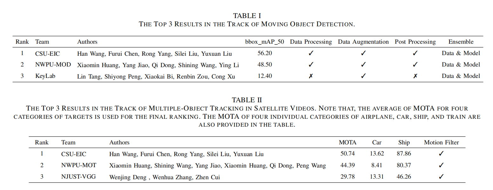
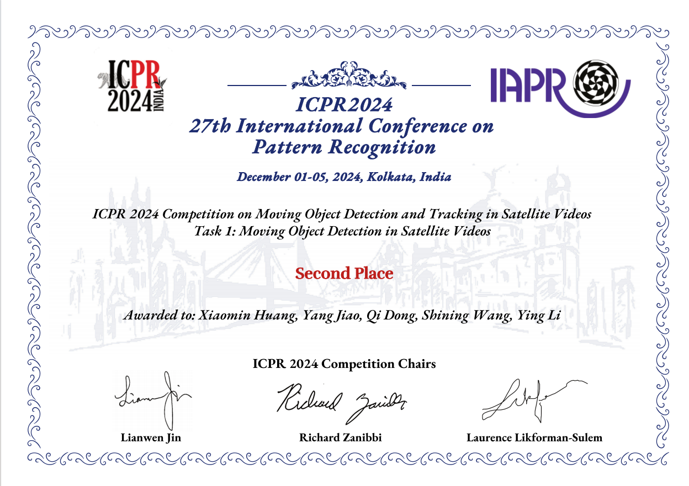
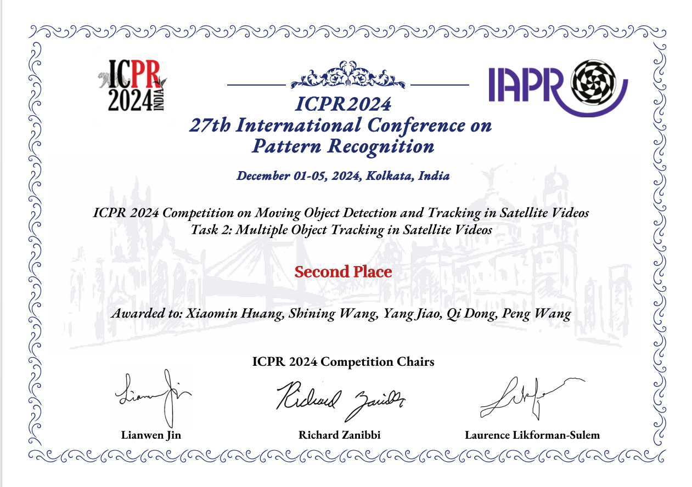
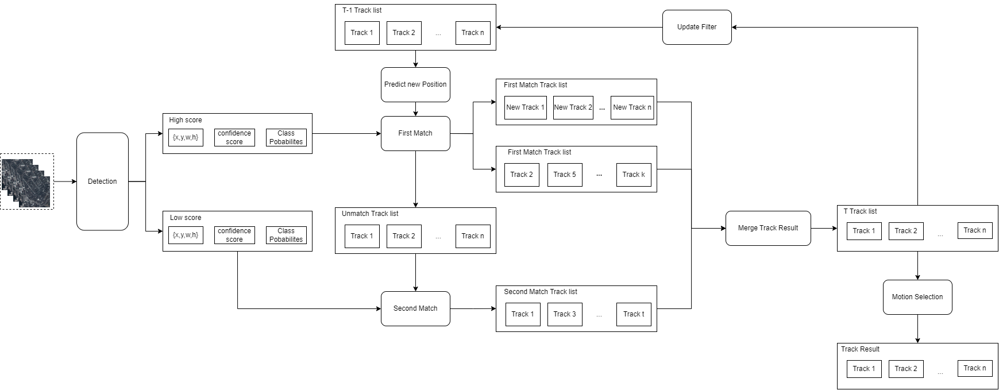

卫星视频运动目标检测与跟踪
项目简介
本项目主要目的为参加ICPR2024卫星视频运动目标检测与跟踪比赛，比赛地址https://satvideodt2024.github.io/。比赛包括两个赛道：Track1：Tiny moving object detection in satellite videos；Track2：Multiple-object tracking in satellite videos。本项目主要介绍本人负责的多目标跟踪部分，针对卫星视频运动目标的跟踪任务。
Track1基于DSFNet，提出针对卫星视频运动目标的HM-DSFNet++,在测试数据集上达到48.50的mAP; Track2基于ByteTrack框架，提出针对卫星视频运动目标的两阶段匹配算法ST-Track，在测试数据集上达到44.39的MOTA。

项目成果
- Track1：Tiny moving object detection in satellite videos. The Second place in the final ranking.
- Track2：Multiple-object tracking in satellite videos. The Second place in the final ranking.
- 论文：The Two Challenge on Moving Object Detection and Tracking in Satellite Videos: Methods and Results. ICPR2024.
  数据集介绍
卫星视频多目标跟踪任务旨在定位多个感兴趣的对象，保持它们的身份，并在整个视频中找出它们各自的轨迹。任务数据包括从 VISO（google Drive，Baidu Drive（提取代码：VISO））数据集中选择的95 个视频（视频 1 至 95），共计 28,500 帧。具体来说，视频 1 至 65 将用作训练集，视频 66 至 75 将用作验证集。将提供每个帧中每个对象的边界框注释和实例 ID。测试集由视频 76 至 95 组成，只提供第一帧的注释作为初始化。参与者要在训练集上训练自己的模型，并在验证集上验证其性能。然后，使用最终确定的模型在测试集上生成跟踪结果。
数据集详细介绍见：https://satvideodt2024.github.io/
算法介绍
卫星视频运动目标的跟踪主要难点在于，卫星高空拍摄的目标尺寸非常小（目标小于5px），导致外观特征完全失真，无法利用外观特征进行数据关联。同时由于外观特征严重模糊，目标检测算法的置信度普遍偏低，导致跟踪过程出现严重的目标丢失和错误匹配问题。因此如何抑制检测的错误结果，同时对低置信度的外观模糊目标进行匹配是卫星视频目标跟踪的主要难念。
因此，本项目基于ByteTrack框架提出了一种针对卫星视频运动目标的两阶段匹配算法两阶段匹配方法（ST-Track），以Track1的检测结果作为MOT任务的输入，采用综合关联机制保证消失目标的轨迹连续性，设计基于空间位置关系和外观特征的细粒度相似性评估，避免错误关联，提高跟踪稳定性，最后采用智能轨迹维护与更新，结合基于过滤器的运动选择机制，进一步提升跟踪精度和鲁棒性。最终在测试数据集上达到44.39的MOTA。

结果展示
跟踪轨迹可视化：
跟踪结果可视化：